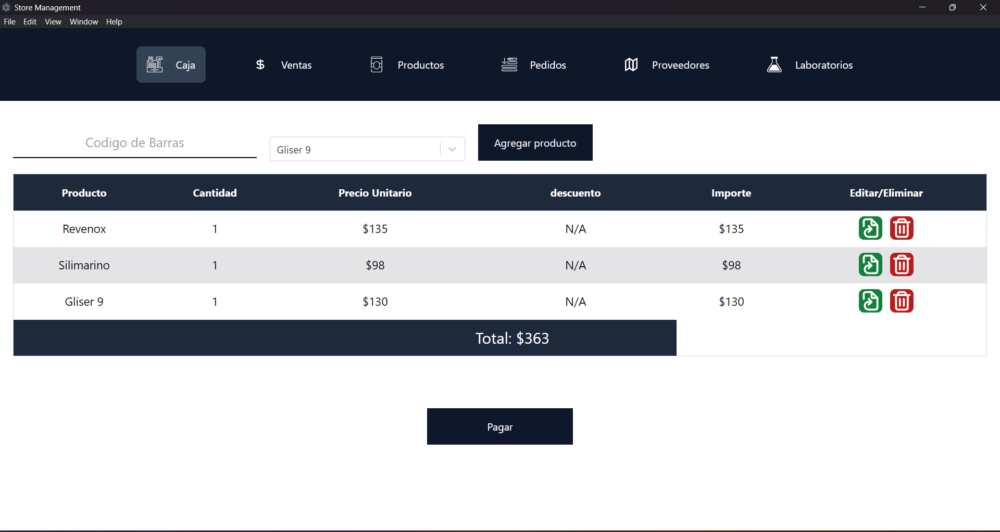
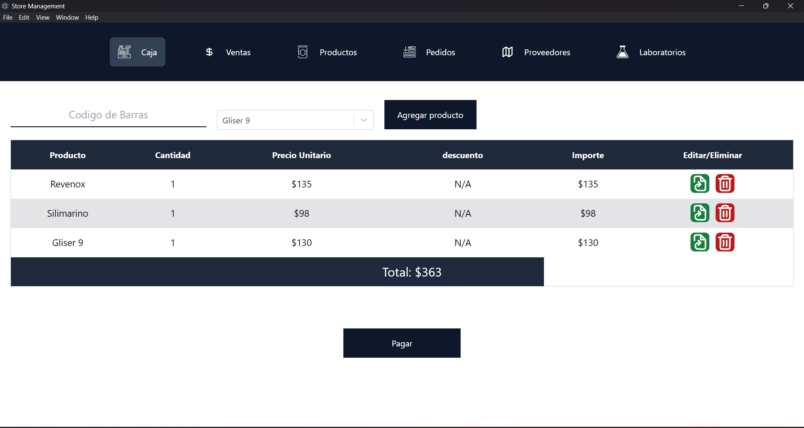

I made this project for a local store that needed to manage their products, providers, orders, and
sales. 🛍️ This project has been made with React with Tailwind in the
frontend, NodeJs in the backend,
and the database in PostgreSQL. 💼
This project is a desktop application made with ElectronJs that uses web tools to make
this possible.
💻
I use multiple libraries to handle validations, manage the routes, and simplify the database connection,
including migrations, retrieval, and data insertion. 📚
This project has been quite a challenge. I had to learn a lot of new things to make this possible. I had
to learn how to configure React with an Electron.js app and how to send and retrieve information from
the backend (which is within the project itself). 👨💻
 
